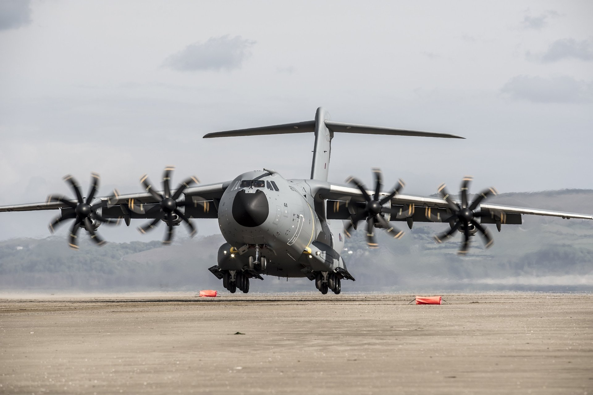
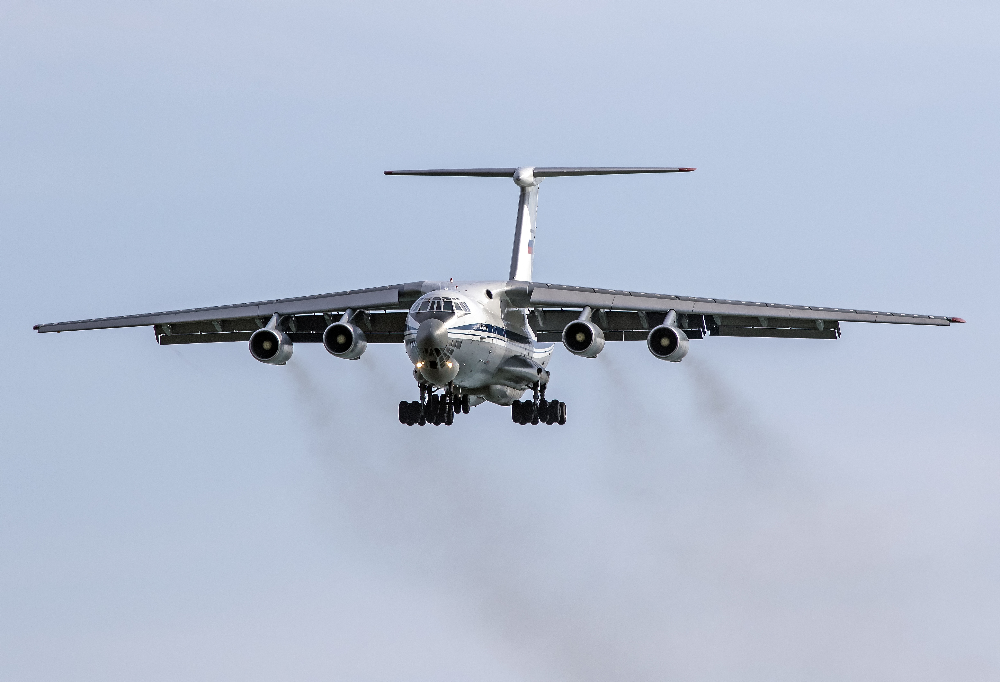
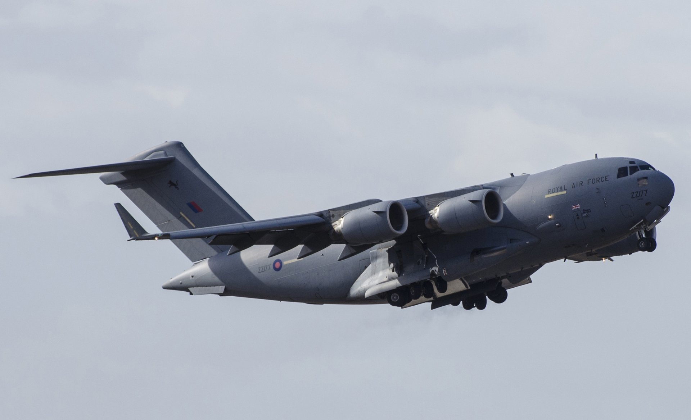
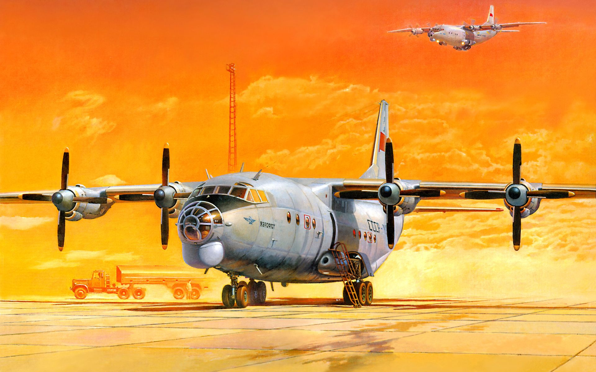

Military transport aircraft or military cargo aircraft are used to airlift troops, weapons and other military equipment to support military operations. Transport aircraft can be used for both strategic and tactical missions, and are often diverted to civil emergency relief missions.

The Airbus A400M Atlas is a European four-engine turboprop military transport aircraft. It was designed by Airbus Military (now Airbus Defence and Space) as a tactical airlifter with strategic capabilities to replace older transport aircraft,
such as the Transall C-160 and the Lockheed C-130 Hercules.[7] The A400M is positioned, in terms of size, between the C-130 and the Boeing C-17; it can carry heavier loads than the C-130 and is able to use rough landing strips. Along
with the transport role, the A400M can perform aerial refueling and medical evacuation when fitted with appropriate equipment. The A400M's maiden flight, originally planned for 2008, took place on 11 December 2009 from Seville, Spain.
Between 2009 and 2010, the A400M faced cancellation as a result of development programme delays and cost overruns; however, the customer nations chose to maintain their support for the project. A total of 174 A400M aircraft had been
ordered by eight nations by July 2011. In March 2013, the A400M received European Aviation Safety Agency (EASA) certification. The first aircraft was delivered to the French Air Force in August 2013.
Airbus A400M Atlas

The Ilyushin Il-76 (Russian: Илью́шин Ил-76; NATO reporting name: Candid) is a multi-purpose four-engine turbofan strategic airlifter designed by the Soviet Union's Ilyushin design bureau. It was first planned as a commercial freighter
in 1967, as a replacement for the Antonov An-12. It was designed to deliver heavy machinery to remote, poorly served areas. Military versions of the Il-76 have been widely used in Europe, Asia and Africa, including use as an aerial
refueling tanker or command center. The Il-76 has seen extensive service as a commercial freighter for ramp-delivered cargo, especially for outsized or heavy items unable to be otherwise carried. It has also been used as an emergency
response transport for civilian evacuations as well as for humanitarian aid and disaster relief around the world. Because of its ability to operate from unpaved runways, it has been useful in undeveloped areas. Specialized models have
also been produced for aerial firefighting and zero-G training.
Ilyushin Il-76

The McDonnell Douglas/Boeing C-17 Globemaster III is a large military transport aircraft that was developed for the United States Air Force (USAF) from the 1980s to the early 1990s by McDonnell Douglas. The C-17 carries forward the name
of two previous piston-engined military cargo aircraft, the Douglas C-74 Globemaster and the Douglas C-124 Globemaster II. The C-17 commonly performs tactical and strategic airlift missions, transporting troops and cargo throughout
the world; additional roles include medical evacuation and airdrop duties. It was designed to replace the Lockheed C-141 Starlifter, and also fulfill some of the duties of the Lockheed C-5 Galaxy, freeing the C-5 fleet for outsize
cargo. Boeing, which merged with McDonnell Douglas in 1997, continued to manufacture C-17 aircraft after the merger. The transport is in service with the U.S. Air Force along with air arms of India, United Kingdom, Australia, Canada,
Qatar, United Arab Emirates, NATO Heavy Airlift Wing, and Kuwait. The final C-17 was completed at the Long Beach, California plant and flown on 29 November 2015.
McDonnell Douglas/Boeing C-17 Globemaster

The Antonov An-12 (Russian: Антонов Ан-12; NATO reporting name: Cub) is a four-engined turboprop transport aircraft designed in the Soviet Union. It is the military version of the Antonov An-10 and has many variants. For more than three
decades the An-12 was the standard medium-range cargo and paratroop transport aircraft of the Soviet air forces. A total of 1,248 were eventually built.